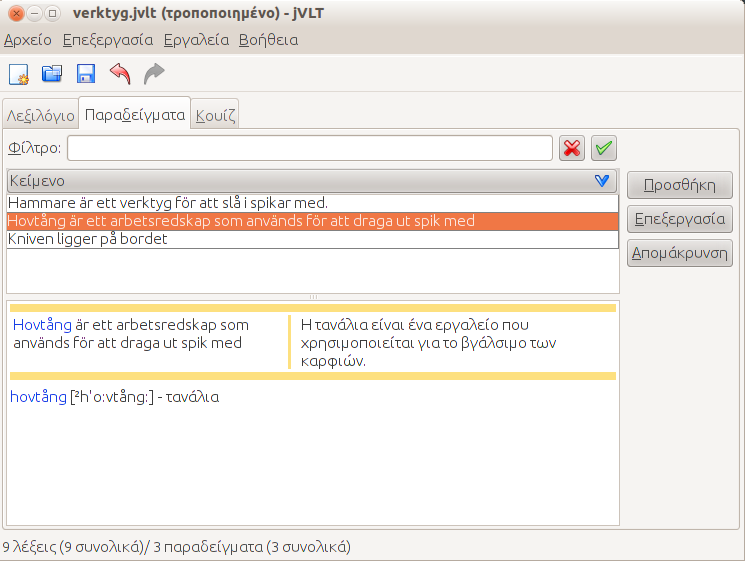
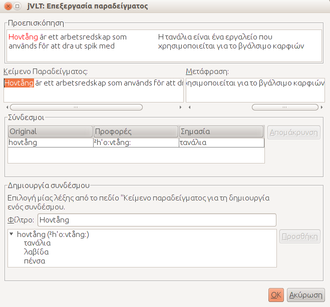

jVLT - Ένα εργαλείο εκμάθησης λεξιλογίου
Παραδείγματα

Προσθήκη Παραδειγμάτων
Υπάρχουν δύο βασικά βήματα που πρέπει να εκτελεστούν όταν δημιουργείς ένα νέο παράδειγμα:- Εισαγωγή του παραδείγματος, και προαιρετικά της μετάφρασης του,
- δημιουργία συνδέσμων μεταξύ του παραδείγματος και των λέξεων του λεξιλογίου
Για να δημιουργήσεις ένα σύνδεσμο σε μία λέξη, πρέπει πρώτα να επιλέξεις το τμήμα του κειμένου που θέλεις να συνδέσεις με αυτήν. Η επιλεγμένη συμβολοσειρά αυτομάτως εισάγεται στο πεδίο κειμένου "Φίλτρο" στο τμήμα "Δημιουργία Συνδέσμου" του παραθύρου διαλόγου. Μπορείς να επεξεργαστείς την συμβολοσειρά. Έστω ότι έχεις ένα παράδειγμα που περιέχει τη συμβολοσειρά "έγινε" και θέλεις να το συνδέσεις με τη λέξη "γίνομαι". Πρέπει να αλλάξεις την αυτόματα εισαγόμενη συμβολοσειρά "έγινε" στη "γίνομαι" ή κάποια υποσυμβολοσειρά της "γίνομαι".
Αφού εφαρμοστεί το φίλτρο προκύπτει μια λίστα λέξεων που ταιριάζουν με το παράδειγμα. Κάθε λέξη περιέχει μια λίστα υποαντικειμένων που είναι τα νοήματα της. Για να δημιουργήσεις ένα σύνδεσμο πρέπει να επιλέξεις ένα από τα νοήματα μίας λέξης και να πατήσεις το κουμπί "Προσθήκη". Εάν θέλεις να αφαιρέσεις ένα σύνδεσμο, επίλεξε τον από τη λίστα κάτω από το πεδίο κειμένου "Μετάφραση" και κάνε κλικ στο "Διαγραφή".
